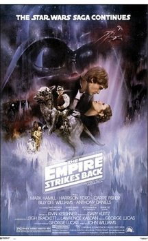

Bienvenue dans une galaxie très très lointaine...
Star Wars (La Guerre des étoiles en VF à sa sortie) est un univers de science fantasy créé par George Lucas. D'abord conçue comme une trilogie cinématographique sortie entre 1977 et 1983.
En accord avec les lois du genre space opera, l'action se déroule « il y a bien longtemps, dans une galaxie très lointaine », qui est le théâtre d'affrontements entre les Chevaliers Jedi et les Seigneurs noirs des Sith, personnes sensibles à la Force, un champ énergétique mystérieux leur procurant des pouvoirs psychiques. Les Jedi maîtrisent le Côté lumineux de la Force, pouvoir bénéfique et défensif, pour maintenir la paix dans la galaxie. Sith utilisent le Côté obscur, pouvoir nuisible et destructeur, pour leurs usages personnels et pour dominer la galaxie.
Les 3 films de la trilogie de 1977
Episode IV : Un nouvel espoir
 L'intrigue du film se concentre sur l'Alliance rebelle,
une organisation qui tente de détruire la station spatiale Étoile noire, l'arme
absolue du très autoritaire Empire galactique.
Mêlé malgré lui à ce conflit galactique, le jeune ouvrier agricole Luke
Skywalker s'engage au sein des forces rebelles
après le massacre de sa famille par des soldats impériaux. Initié aux pouvoirs de la Force par
son mentor Obi-Wan Kenobi,
trop tôt assassiné par le maléfique Darth Vader (Dark Vador en VF),
Luke utilise ses nouveaux dons pour détruire l'Étoile noire à la fin du film.
L'intrigue du film se concentre sur l'Alliance rebelle,
une organisation qui tente de détruire la station spatiale Étoile noire, l'arme
absolue du très autoritaire Empire galactique.
Mêlé malgré lui à ce conflit galactique, le jeune ouvrier agricole Luke
Skywalker s'engage au sein des forces rebelles
après le massacre de sa famille par des soldats impériaux. Initié aux pouvoirs de la Force par
son mentor Obi-Wan Kenobi,
trop tôt assassiné par le maléfique Darth Vader (Dark Vador en VF),
Luke utilise ses nouveaux dons pour détruire l'Étoile noire à la fin du film.
Episode V : L’Empire contre-attaque

L'histoire de cet épisode se déroule trois ans après les événements d’Un nouvel espoir.
La guerre entre le maléfique Empire galactique et son antagoniste, l’Alliance
rebelle, bat son plein. Les héros de l’Alliance Luke Skywalker
et Han Solo se séparent après la prise de la principale base rebelle par
l’Empire. Luke part sur la planète Dagobah afin de suivre la
formation
de Jedi auprès du maître Yoda. Solo tente lui d’échapper à la chasse spatiale que
lui mène Dark Vador, l’apprenti de l’Empereur Palpatine.
Le film se termine par un combat entre Luke et Vador et la scène culte où Vador lui révèle qu'il
n'est autre que son père.
Luke, je suis ton père !
Episode VI : Le retour du Jedi
 L'histoire de cet épisode se déroule un an après les événements de L'Empire contre-attaque.
Le maléfique Empire galactique construit une nouvelle station spatiale
Étoile de la mort pour anéantir définitivement l'Alliance rebelle,
son opposition principale. Pour tendre un piège à la flotte ennemie, l'empereur
Palpatine se rend sur la station encore vulnérable.
Les dirigeants de l'Alliance lancent donc toutes leurs forces à l'assaut ne se doutant pas que la
flotte impériale les attend de pied ferme.
De son côté, le jeune Jedi Luke Skywalker, l'un des héros de l'Alliance, veut
sauver son père Dark Vador du côté obscur de la Force et le rallier à sa cause.
L'histoire de cet épisode se déroule un an après les événements de L'Empire contre-attaque.
Le maléfique Empire galactique construit une nouvelle station spatiale
Étoile de la mort pour anéantir définitivement l'Alliance rebelle,
son opposition principale. Pour tendre un piège à la flotte ennemie, l'empereur
Palpatine se rend sur la station encore vulnérable.
Les dirigeants de l'Alliance lancent donc toutes leurs forces à l'assaut ne se doutant pas que la
flotte impériale les attend de pied ferme.
De son côté, le jeune Jedi Luke Skywalker, l'un des héros de l'Alliance, veut
sauver son père Dark Vador du côté obscur de la Force et le rallier à sa cause.
Fiches Techniques
| Star Wars, épisode IV : Un nouvel espoir | Star Wars, épisode V : L'Empire contre-attaque | Star Wars, épisode VI : Le retour du Jedi | |
|---|---|---|---|
| Titre original | Star Wars | The Empire Strikes Back | Return of the Jedi |
| Année de sportie France | 19 octobre 1977 | 20 août 1980 | 19 octobre 1983 |
| Réalisation | Georg Lucas | Irvin Kershner | Richard Marquand |
| Scénario | George Lucas | ||
| - | Lawrence Kasdan | ||
| - | Leigh Brackett | - | |
| Musique | John Williams | ||
| Société de distibution | 20th Century Fox | ||